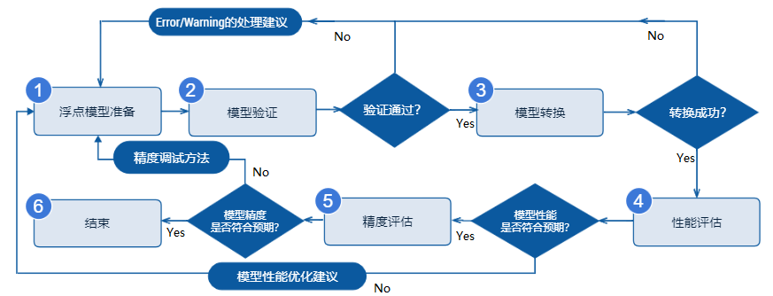
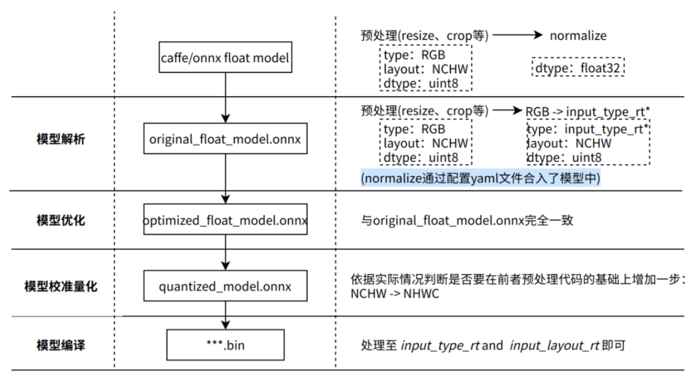
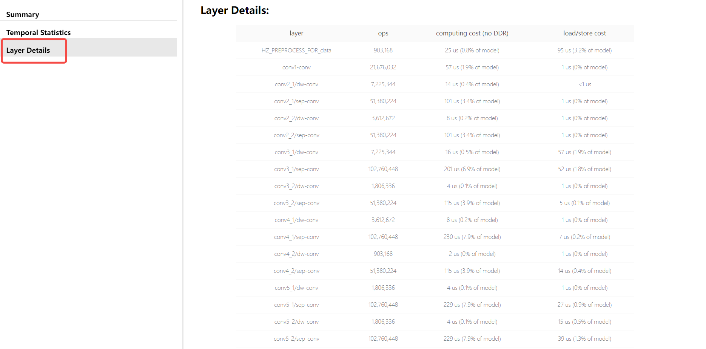
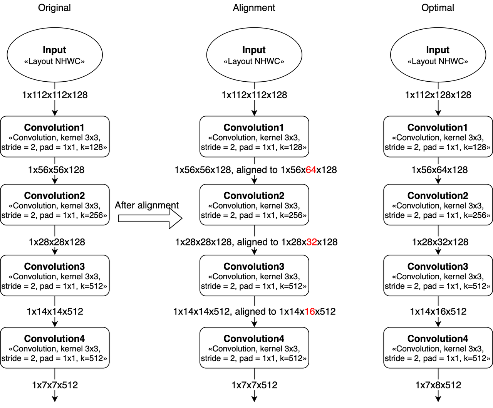
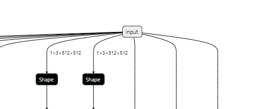

6.4.1.1. 简介
模型转换是指将原始浮点模型转换为地平线混合异构模型的过程。 原始浮点模型（文中部分地方也称为浮点模型）是指您通过TensorFlow/PyTorch等DL框架训练得到的可用模型，这个模型的计算精度为float32；混合异构模型是一种适合在地平线芯片上运行的模型格式。 本章节将反复使用到这两种模型名词，为避免理解歧义，请先理解这个概念再阅读下文。
配合地平线量化工具链的模型完整开发过程，需要经过 浮点模型准备、 模型验证、 模型转换、 性能评估 和 精度评估 共五个重要阶段，如下图。
浮点模型准备 本阶段用来确保原始浮点模型的格式为地平线模型转换工具支持的格式，原始浮点模型来自于您通过TensorFlow/PyTorch等DL框架训练得到可用模型。具体的浮点模型要求与建议，请阅读 浮点模型准备 章节内容。
模型验证 本阶段用来校验原始浮点模型是否满足地平线量化工具链的要求。地平线提供 hb_mapper checker 检查工具来完成浮点模型的检查。具体使用方法，请阅读 验证模型 章节内容。
模型转换 本阶段用来完成浮点模型到地平线混合异构模型的转换，经过这个阶段，您将得到一个可以在地平线芯片上运行的模型。地平线提供 hb_mapper makertbin 转换工具来完成模型优化、量化和编译等关键步骤。具体使用方法，请阅读 转换模型 章节内容。
性能评估 本阶段主要用于测评地平线混合异构模型的推理性能情况，地平线提供了模型性能评估的工具，您可以使用这些工具验证模型性能是否达到应用要求。具体使用说明，请阅读 模型性能分析与调优 章节内容。
精度评估 本阶段主要用于测评地平线混合异构模型的推理精度情况，地平线提供了模型精度评估的工具。具体使用说明，请阅读 模型精度分析与调优 章节内容。
注意
通常在模型转换阶段完成后就可以得到在地平线芯片上运行的模型，但是为了确保您得到的模型性能和精度都是符合应用要求的，地平线建议每次转换后都完成后续的性能评估与精度评估步骤。
模型转换过程会生成onnx模型, 该模型均为中间产物, 只是便于用户验证模型精度情况, 因此不保证其在版本间的兼容性。 若使用示例中的评测脚本对onnx模型进行单张图片评测或在测试集上评测时, 请使用当前版本工具生成的onnx模型进行操作。
6.4.1.2. 模型算子约束
为了确保模型能顺利在地平线平台上高效运行，模型中所使用的算子需要符合地平线量化工具链的算子约束。 具体支持情况请阅读 模型算子支持列表 章节内容进行查询。
6.4.1.3. 模型准备
基于公开DL框架训练得到的浮点模型是地平线模型转换工具的输入，目前转换工具支持的DL框架如下：
框架 |
Caffe |
PyTorch |
TensorFlow |
MXNet |
其他框架 |
|---|---|---|---|---|---|
地平线工具链 |
支持 |
支持（转ONNX） |
支持（转ONNX） |
||
以上框架中， Caffe框架导出的caffemodel是直接支持的，PyTorch、TensorFlow和MXNet等DL框架通过转换到ONNX格式间接支持。
对于不同框架到ONNX的转换，目前都有对应的标准化方案，参考如下：
- Pytorch2Onnx：PytTorch官方API支持直接将模型导出为ONNX模型，参考链接：
https://pytorch.org/tutorials/advanced/super_resolution_with_onnxruntime.html。
- Tensorflow2Onnx：基于ONNX社区的onnx/tensorflow-onnx 进行转换，参考链接：
- MXNet2Onnx：MXNet官方API支持直接将模型导出为ONNX模型，参考链接：
https://github.com/dotnet/machinelearning/blob/master/test/Microsoft.ML.Tests/OnnxConversionTest.cs。
- 更多框架的ONNX转换支持，参考链接：
https://github.com/onnx/tutorials#converting-to-onnx-format。
注意
目前转换工具仅支持输出个数小于或等于32的模型进行转换。
支持
caffe 1.0版本的caffe浮点模型和ir_version≤7,opset=10、opset=11版本的onnx浮点模型量化转换成地平线支持的定点模型, onnx模型的ir_version与onnx版本的对应关系请参考 onnx官方文档 ；其他DL框架训练的浮点模型需要先导出要求符合版本要求的ONNX浮点模型后，才能进行量化转换;
模型输入维度只支持
固定4维输入NCHW或NHWC（N维度只能为1），例如：1x3x224x224或1x224x224x3， 不支持动态维度及非4维输入；浮点模型中不要包含有
后处理算子，例如：nms算子。
6.4.1.4. 模型验证
模型正式转换前，请先使用 hb_mapper checker 工具进行模型验证，确保其符合地平线X3芯片的支持约束。
小技巧
建议参考使用地平线模型转换 horizon_model_convert_sample 示例包中的caffe、onnx等示例模型的脚本方法: 01_check.sh。
使用 hb_mapper checker 工具验证模型
- hb_mapper checker 工具的使用方式如下：
hb_mapper checker --model-type ${model_type} \ --march ${march} \ --proto ${proto} \ --model ${caffe_model/onnx_model} \ --input-shape ${input_node} ${input_shape} \ --output ${output}
- hb_mapper checker 参数解释：
- --model-type
用于指定检查输入的模型类型，目前只支持设置
caffe或者onnx。- --march
用于指定需要适配的地平线芯片类型，X/J3芯片应设置为
bernoulli2。- --proto
此参数仅在
model-type指定caffe时有效，取值为Caffe模型的prototxt文件名称。- --model
在
model-type被指定为caffe时，取值为Caffe模型的caffemodel文件名称。 在model-type被指定为onnx时，取值为ONNX模型文件名称。- --input-shape
可选参数，明确指定模型的输入shape。 取值为
{input_name} {NxHxWxC/NxCxHxW}，input_name与shape之间以空格分隔。 例如模型输入名称为data1，输入shape为[1,224,224,3]， 则配置应该为--input_shape data1 1x224x224x3。 如果此处配置shape与模型内shape信息不一致，以此处配置为准。注解
注意一个
--input-shape只接受一个name和shape组合，如果您的模型有多个输入节点， 在命令中多次配置--input-shape参数即可。- --output
该参数已经废弃, log信息默认存储于
hb_mapper_checker.log中。
检查异常处理
如果模型检查步骤异常终止或者出现报错信息，则说明模型验证不通过，请根据终端打印或在当前路径下生成的 hb_mapper_checker.log 日志文件确认报错信息和修改建议。
例如：以下配置中含不可识别算子类型 Accuracy：
layer {
name: "data"
type: "Input"
top: "data"
input_param { shape: { dim: 1 dim: 3 dim: 224 dim: 224 } }
}
layer {
name: "Convolution1"
type: "Convolution"
bottom: "data"
top: "Convolution1"
convolution_param {
num_output: 128
bias_term: false
pad: 0
kernel_size: 1
group: 1
stride: 1
weight_filler {
type: "msra"
}
}
}
layer {
name: "accuracy"
type: "Accuracy"
bottom: "Convolution3"
top: "accuracy"
include {
phase: TEST
}
}
使用 hb_mapper checker 检查这个模型，您会在hb_mapper_checker.log中得到如下信息：
ValueError: Not support layer name=accuracy type=Accuracy
注意
如果模型检查步骤异常终止或者出现报错信息，则说明模型验证不通过，请根据终端打印或在当前路径下生成的
hb_mapper_checker.log日志文件确认报错信息和修改建议，错误信息可以在 模型量化错误及解决方法 章节来查找错误的解决方法，若以上步骤仍不能排除问题，请联系地平线技术支持团队或在地平线官方技术社区（https://developer.horizon.ai/）提出您的问题，我们将在24小时内给您提供支持。
检查结果解读
如果不存在ERROR，则顺利通过校验。 hb_mapper checker 工具将直接输出如下信息：
==============================================
Node ON Subgraph Type
----------------------------------------------
conv1 BPU id(0) HzSQuantizedConv
conv2_1/dw BPU id(0) HzSQuantizedConv
conv2_1/sep BPU id(0) HzSQuantizedConv
conv2_2/dw BPU id(0) HzSQuantizedConv
conv2_2/sep BPU id(0) HzSQuantizedConv
conv3_1/dw BPU id(0) HzSQuantizedConv
conv3_1/sep BPU id(0) HzSQuantizedConv
...
结果中每行都代表一个模型节点的check情况，每行含Node、ON、Subgraph和Type四列，分别为节点名称、执行节点计算的硬件、节点所属子图和节点映射到的地平线内部实现名称。 如果模型在网络结构中出现了CPU计算的算子，hb_mapper checker工具将把这个算子前后连续在BPU计算的部分拆分为两个Subgraph（子图）。
检查结果的调优指导
在最理想的情况下，模型网络结构中的算子都应该在BPU上运行，也就是只有一个子图。
如果出现了CPU算子导致拆分多个子图， hb_mapper checker 工具会给出导致CPU算子出现的具体原因。
例如：以下Caffe模型的出现了Reshape + Pow + Reshape 的结构, 从算子约束列表中我们可以看到, Reshape 算子目前为在CPU上运行的算子, 而Pow的shape也是非4维的。
因此模型最终检查结果也会出现分段情况, 如下:
2022-05-25 15:16:14,667 INFO The converted model node information:
====================================================================================
Node ON Subgraph Type
-------------------------------------------------------------------------------------
conv68 BPU id(0) HzSQuantizedConv
sigmoid16 BPU id(0) HzLut
axpy_prod16 BPU id(0) HzSQuantizedMul
UNIT_CONV_FOR_eltwise_layer16_add_1 BPU id(0) HzSQuantizedConv
prelu49 BPU id(0) HzPRelu
fc1 BPU id(0) HzSQuantizedConv
fc1_reshape_0 CPU -- Reshape
fc_output/square CPU -- Pow
fc_output/sum_pre_reshape CPU -- Reshape
fc_output/sum BPU id(1) HzSQuantizedConv
fc_output/sum_reshape_0 CPU -- Reshape
fc_output/sqrt CPU -- Pow
fc_output/expand_pre_reshape CPU -- Reshape
fc_output/expand BPU id(2) HzSQuantizedConv
fc1_reshape_1 CPU -- Reshape
fc_output/expand_reshape_0 CPU -- Reshape
fc_output/op CPU -- Mul
根据 hb_mapper checker 给出的提示，一般来说算子运行在BPU上会有更好的性能表现，这里可以将pow、reshape 这类CPU算子从模型中移除，将对应算子的功能放入后处理中计算，从而减少子图数量。
当然，多个子图也不会影响整个转换流程，但会较大程度地影响模型性能，建议尽量调整模型算子到BPU上执行，可参考X3算子支持列表中的BPU算子算子支持列表来做同功能的算子替换或者将模型中的CPU算子移到模型推理的前、后处理中去做CPU计算。
6.4.1.5. 模型转换
转换模型阶段会完成浮点模型到地平线混合异构模型的转换，经过这个阶段，您将得到一个可以在地平线芯片上运行的模型。 在进行转换之前，请确保已经顺利通过了上文的验证模型过程。
模型转换使用 hb_mapper makertbin 工具完成，转换期间会完成模型优化和校准量化等重要过程，校准需要依照模型预处理要求准备校准数据。
为了方便您全面了解模型转换，本节将依次介绍校准数据准备、转换工具使用、转换内部过程解读、转换结果解读和转换产出物解读等内容。
准备校准数据
在进行模型转换时，校准阶段会需要 100份左右 标定样本输入，每一份样本都是一个独立的数据文件。 为了确保转换后模型的精度效果，我们希望这些校准样本来自于您训练模型使用的 训练集或验证集 ，不要使用非常少见的异常样本，例如 纯色图片、不含任何检测或分类目标的图片等。
您需要把取自训练集/验证集的样本做与模型推理（inference）前一样的前处理，
处理完后的校准样本会与原始模型具备一样的数据类型( input_type_train )、尺寸( input_shape )和
layout( input_layout_train )，对于featuremap输入的模型，您可以通过 numpy.tofile 命令将数据保存为float32格式的二进制文件，
工具链校准时会基于 numpy.fromfile 命令进行读取。
例如，使用ImageNet训练的用于分类的原始浮点模型，它只有一个输入节点，输入信息描述如下：
输入类型：
BGR输入layout：
NCHW输入尺寸：
1x3x224x224
使用验证集做模型推理（inference）时的数据预处理如下：
图像长宽等比scale,短边缩放到256。
center_crop方法获取224x224大小图像。按通道减mean。
数据乘以scale系数。
针对上述举例模型的样本处理代码如下： 为避免过长代码篇幅，各种简单transformer实现代码未贴出，具体使用请参考 transformer使用方法 章节内容。
小技巧
建议参考使用地平线模型转换 horizon_model_convert_sample 示例包中的caffe、onnx等示例模型的预处理步骤方法: 02_preprocess.sh 和 preprocess.py 。
# 本示例使用skimage，如果是opencv会有所区别
# 需要您特别注意的是，transformers中并没有体现减mean和乘scale的处理
# mean和scale操作已经融合到了模型中，请参考下文norm_type/mean_value/scale_value配置
def data_transformer():
transformers = [
# 长宽等比scale，短边缩放至256
ShortSideResizeTransformer(short_size=256),
# CenterCrop获取224x224图像
CenterCropTransformer(crop_size=224),
# skimage读取结果为NHWC排布，转换为模型需要的NCHW
HWC2CHWTransformer(),
# skimage读取结果通道顺序为RGB，转换为模型需要的BGR
RGB2BGRTransformer(),
# skimage读取数值范围为[0.0,1.0]，调整为模型需要的数值范围
ScaleTransformer(scale_value=255)
]
return transformers
# src_image 标定集中的原图片
# dst_file 存放最终标定样本数据的文件名称
def convert_image(src_image, dst_file, transformers)：
image = skimage.img_as_float(skimage.io.imread(src_file))
for trans in transformers:
image = trans(image)
# 模型指定的input_type_train BGR数值类型是UINT8
image = image.astype(np.uint8)
# 二进制存储标定样本到数据文件
image.tofile(dst_file)
if __name__ == '__main__':
# 此处表示原始标定图片集合，伪代码
src_images = ['ILSVRC2012_val_00000001.JPEG'，...]
# 此处表示最终标定文件名称（后缀名不限制），伪代码
# calibration_data_bgr_f32是您在配置文件中指定的cal_data_dir
dst_files = ['./calibration_data_bgr_f32/ILSVRC2012_val_00000001.bgr'，...]
transformers = data_transformer()
for src_image, dst_file in zip(src_images, dst_files):
convert_image(src_image, dst_file, transformers)
使用 hb_mapper makertbin 工具转换模型
小技巧
建议参考使用地平线模型转换 horizon_model_convert_sample 示例包中的caffe、onnx等示例模型的脚本方法: 03_build.sh。
- hb_mapper makertbin命令使用方式如下：
hb_mapper makertbin --config ${config_file} \ --model-type ${model_type}
- hb_mapper makertbin参数解释：
- --model-type
用于指定转换输入的模型类型，目前支持设置
caffe或者onnx。- --config
模型编译的配置文件，内容采用yaml格式，文件名使用.yaml后缀。完整的配置文件模板参考如下章节内容。
注意
yaml配置文件，可直接使用 caffe模型量化yaml文件模板 和 onnx模型量化yaml文件模板 模板文件进行填写。若 hb_mapper makertbin 步骤异常终止或者出现报错信息，则说明模型转换失败，请根据终端打印或在当前路径下生成的
hb_mapper_makertbin.log日志文件确认报错信息和修改建议，错误信息可以在 模型量化错误及解决方法 章节来查找错误的解决方法，若以上步骤仍不能排除问题，请联系地平线技术支持团队或在地平线官方技术社区（https://developer.horizon.ai/）提出您的问题，我们将在24小时内给您提供支持。
模型转换yaml配置参数说明
注解
此处配置文件仅作展示，在实际模型配置文件中 caffe_model 与 onnx_model 两个参数只存在其中之一。
即，要么是Caffe模型，要么是ONNX模型。
# 模型参数组
model_parameters:
# 原始Caffe浮点模型描述文件
prototxt: '***.prototxt'
# 原始Caffe浮点模型数据模型文件
caffe_model: '****.caffemodel'
# 原始Onnx浮点模型文件
onnx_model: '****.onnx'
# 转换的目标AI芯片架构，保持默认，X3 bpu使用的是bernoulli2架构
march: 'bernoulli2'
# 模型转换输出的用于上板执行的模型文件的名称前缀
output_model_file_prefix: 'mobilenetv1'
# 模型转换输出的结果的存放目录
working_dir: './model_output_dir'
# 指定转换后混合异构模型是否保留输出各层的中间结果的能力,保持默认即可
layer_out_dump: False
# 输入信息参数组
input_parameters:
# 原始浮点模型的输入节点名称
input_name: "data"
# 原始浮点模型的输入数据格式（数量/顺序与input_name一致）
input_type_train: 'bgr'
# 原始浮点模型的输入数据排布（数量/顺序与input_name一致）
input_layout_train: 'NCHW'
# 原始浮点模型的输入数据尺寸
input_shape: '1x3x224x224'
# 网络实际执行时，输入给网络的batch_size, 默认值为1
input_batch: 1
# 在模型中添加的输入数据预处理方法
norm_type: 'data_mean_and_scale'
# 预处理方法的图像减去的均值, 如果是通道均值，value之间必须用空格分隔
mean_value: '103.94 116.78 123.68'
# 预处理方法的图像缩放比例，如果是通道缩放比例，value之间必须用空格分隔
scale_value: '0.017'
# 转换后混合异构模型需要适配的输入数据格式（数量/顺序与input_name一致）
input_type_rt: 'yuv444'
# 输入数据格式的特殊制式
input_space_and_range: 'regular'
# 转换后混合异构模型需要适配的输入数据排布（数量/顺序与input_name一致），若input_type_rt配置为nv12，则此处参数不需要配置
input_layout_rt: 'NHWC'
# 校准参数组
calibration_parameters:
# 模型校准使用的标定样本的存放目录
cal_data_dir: './calibration_data'
# 指定校准数据二进制文件的数据存储类型。
cal_data_type: 'float32'
# 开启图片校准样本自动处理（skimage read; resize到输入节点尺寸）
#preprocess_on: False
# 校准使用的算法类型, 优先使用的 default 校准算法
calibration_type: 'default'
# max 校准方式的参数
# max_percentile: 1.0
# 强制指定OP在CPU上运行，一般不需要配置，在模型精度调优阶段可以开启此功能，用于尝试精度优化
#run_on_cpu: {OP_name}
# 强制指定OP在BPU上运行， 一般不需要配置，在模型性能调优阶段可以开启此功能，用于尝试性能优化
# run_on_bpu: {OP_name}
# 编译参数组
compiler_parameters:
# 编译策略选择
compile_mode: 'latency'
# 是否打开编译的debug信息，保持默认的 False
debug: False
# 模型运行核心数
core_num: 1
# 模型编译的优化等级选择，保持默认的 O3
optimize_level: 'O3'
# 此参数组，无需配置，只在有自定义CPU算子时开启使用
#custom_op:
# 自定义op的校准方式, 推荐使用注册方式 register
#custom_op_method: register
# 自定义OP的实现文件, 多个文件可用";"分隔, 该文件可由模板生成, 详情见自定义OP相关文档
#op_register_files: sample_custom.py
# 自定义OP实现文件所在的文件夹, 请使用相对路径
#custom_op_dir: ./custom_op
配置文件主要包含模型参数组、输入信息参数组、校准参数组和编译参数组。
在您的配置文件中，四个参数组位置都需要存在，具体参数分为可选和必选，可选参数可以不配置。
具体参数的设置形式为： param_name: 'param_value' ，参数存在多个值时使用 ';' 符号分隔：
param_name: 'param_value1; param_value2; param_value3' 。 例如： run_on_cpu: ‘conv_0; conv_1; conv12’
小技巧
当模型为多输入模型时, 建议用户将可选参数（ input_name, input_shape 等）显式的写出, 以免造成参数对应顺序上的错误。
注意
请注意，如果设置
input_type_rt为nv12，则模型的输入尺寸中不能出现奇数。请注意，目前XJ3上暂不支持
input_type_rt为yuv444且input_layout_rt为NCHW组合的场景。
以下是具体参数信息，参数会比较多，我们依照上述的参数组次序介绍。
模型参数组
编 号 |
参数名称 |
参数配置说明 |
可选/ 必选 |
|---|---|---|---|
1 |
|
参数作用：指定Caffe浮点模型的prototxt文件名称。 取值范围：无。 默认配置：无。 参数说明：在 |
可选 |
2 |
|
参数作用：指定Caffe浮点模型的caffemodel文件名称。 取值范围：无。 默认配置：无。 参数说明：在 |
可选 |
3 |
|
参数作用：指定ONNX浮点模型的onnx文件名称。 取值范围：无。 默认配置：无。 参数说明：在 |
可选 |
4 |
|
参数作用：指定产出混合异构模型需要支持的平台架构。 取值范围： 默认配置： 参数说明： X3&J3芯片对应的微框架。 根据您使用的平台选择。 |
必选 |
5 |
|
参数作用：指定转换产出混合异构模型的名称前缀。 取值范围：无。 默认配置：无。 参数说明：输出的定点模型文件的名称前缀。 |
必选 |
6 |
|
参数作用：指定模型转换输出的结果的存放目录。 取值范围：无。 默认配置： 参数说明：若该目录不存在, 则工具会自动创建目录。 |
可选 |
7 |
|
参数作用：指定混合异构模型是否保留输出中间层值的能力。 取值范围： 默认配置： 参数说明：输出中间层的值是调试需要用到的手段， 常规状态下请不要开启。 |
可选 |
8 |
|
参数作用：指定模型的输出节点。 取值范围：无。 默认配置：无。 参数说明：一般情况下，转换工具会自动识别模型的输出节点。 此参数用于支持您指定一些中间层次作为输出。 设置值为模型中的具体节点名称，
多个值的配置方法请参考前文对 需要您注意的是，一旦设置此参数后，工具将不再自动识别输出节点， 您通过此参数指定的节点就是全部的输出。 |
可选 |
9 |
|
参数作用：设置删除节点的类型。 取值范围：”Quantize”, “Transpose”, “Dequantize”, “Cast”, “Reshape”。不同类型用”;”分割。 默认配置：无。 参数说明：该参数为隐藏参数， 不设置或设置为空不影响模型转换过程。 此参数用于支持您设置待删除节点的类型信息。 被删除的节点必须在模型的开头或者末尾, 与模型的输入或输出连接。 注意：待删除节点会按顺序依次删除，并动态更新模型结构； 同时在节点删除前还会判断该节点是否位于模型的输入输出处。 因此节点的删除顺序很重要。 |
可选 |
10 |
|
参数作用：设置删除节点的名称。 取值范围：无。不同类型用”;”分割。 默认配置：无。 参数说明：该参数为隐藏参数， 不设置或设置为空不影响模型转换过程。 此参数用于支持您设置待删除节点的名称。 被删除的节点必须在模型的开头或者末尾, 与模型的输入或输出连接。 注意：待删除节点会按顺序依次删除，并动态更新模型结构； 同时在节点删除前还会判断该节点是否位于模型的输入输出处。 因此节点的删除顺序很重要。 |
可选 |
输入信息参数组
编 号 |
参数名称 |
参数配置说明 |
可选/ 必选 |
|---|---|---|---|
1 |
|
参数作用：指定原始浮点模型的输入节点名称。 取值范围：无。 默认配置：无。 参数说明：浮点模型只有一个输入节点情况时不需要配置。 多于一个输入节点时必须配置以保证后续类型及校准数据输入顺序的准确性。 多个值的配置方法请参考前文对param_value配置描述。 |
可选 |
2 |
|
参数作用：指定原始浮点模型的输入数据类型。 取值范围： 默认配置：无。 参数说明：每一个输入节点都需要配置一个确定的输入数据类型。 存在多个输入节点时，设置的节点顺序需要与
多个值的配置方法请参考前文对 数据类型的选择请参考： 转换内部过程解读 部分的介绍。 |
必选 |
3 |
|
参数作用：指定原始浮点模型的输入数据排布。 取值范围： 默认配置：无。 参数说明：每一个输入节点都需要配置一个确定的输入数据排布，
这个排布必须与原始浮点模型所采用的数据排布相同。存在多个输入节点时，
设置的节点顺序需要与 多个值的配置方法请参考前文对 什么是数据排布请参考： 转换内部过程解读 部分的介绍。 |
可选 |
4 |
|
参数作用：转换后混合异构模型需要适配的输入数据格式。 取值范围：
默认配置：无。 参数说明：这里是指明您需要使用的数据格式， 不要求与原始模型的数据格式一致， 但是需要注意在边缘平台喂给模型的数据是使用这个格式。 每一个输入节点都需要配置一个确定的输入数据类型，存在多个输入节点时，
设置的节点顺序需要与 多个值的配置方法请参考前文对 数据类型的选择请参考： 转换内部过程解读 部分的介绍。 |
必选 |
5 |
|
参数作用：转换后混合异构模型需要适配的输入数据排布。 取值范围： 默认配置：无。 参数说明：每一个输入节点都需要配置一个确定的输入数据排布， 这个输入是您希望给混合异构模型指定的排布。 不合适的输入数据的排布设置将会影响性能， X/J3平台建议用户使用 NHWC 格式输入。 若input_type_rt配置为nv12，则此处参数不需要配置。 存在多个输入节点时，设置的节点顺序需要与
多个值的配置方法请参考前文对 什么是数据排布请参考： 转换内部过程解读 部分的介绍。 |
可选 |
6 |
|
参数作用：指定输入数据格式的特殊制式。 取值范围： 默认配置： 参数说明：这个参数是为了适配不同ISP输出的yuv420格式，
在相应
更多信息可以通过网络资料了解bt601， 在没有明确需要的情况下，您不要配置此参数。 |
可选 |
7 |
|
参数作用：指定原始浮点模型的输入数据尺寸。 取值范围：无。 默认配置：无。 参数说明：shape的几个维度以 原始浮点模型只有一个输入节点情况时可以不配置， 工具会自动读取模型文件中的尺寸信息。 配置多个输入节点时，设置的节点顺序需要与 多个值的配置方法请参考前文对 |
可选 |
8 |
|
参数作用：指定转换后混合异构模型需要适配的输入batch数量。 取值范围： 默认配置： 参数说明：这里input_batch为转换后混合异构bin模型输入batch数量， 但不影响转换后onnx的模型的输入batch数量。 此参数不配置时默认为1。 此参数仅适用于单输入模型，且``input_shape``第一维必须为1。 |
可选 |
9 |
|
参数作用：在模型中添加的输入数据预处理方法。 取值范围：
默认配置：无。 参数说明：
输入节点时多于一个时，设置的节点顺序需要与 多个值的配置方法请参考前文对 配置该参数的影响请参考： 转换内部过程解读 部分的介绍。 |
必选 |
10 |
|
参数作用：指定预处理方法的图像减去的均值。 取值范围：无。 默认配置：无。 参数说明：当 对于每一个输入节点而言，存在两种配置方式。 第一种是仅配置一个数值，表示所有通道都减去这个均值； 第二种是提供与通道数量一致的数值（这些数值以空格分隔开）， 表示每个通道都会减去不同的均值。 配置的输入节点数量必须与 多个值的配置方法请参考前文对 |
可选 |
11 |
|
参数作用：指定预处理方法的数值scale系数。 取值范围：无。 默认配置：无。 参数说明：当 对于每一个输入节点而言，存在两种配置方式。 第一种是仅配置一个数值，表示所有通道都乘以这个系数； 第二种是提供与通道数量一致的数值（这些数值以空格分隔开）， 表示每个通道都会乘以不同的系数。 配置的输入节点数量必须与 多个值的配置方法请参考前文对 |
可选 |
校准参数组
编 号 |
参数名称 |
参数配置说明 |
可选/ 必选 |
|---|---|---|---|
1 |
|
参数作用：指定模型校准使用的标定样本的存放目录。 取值范围：无。 默认配置：无。 参数说明：目录内校准数据需要符合输入配置的要求。 具体请参考 准备校准数据
部分的介绍。配置多个输入节点时，
设置的节点顺序需要与 多个值的配置方法请参考前文对 当calibration_type为 注意：
为了方便您的使用，如果未发现cal_data_type的配置，我们将根据文件夹
后缀对数据类型进行配置。如果文件夹后缀以 |
可选 |
2 |
|
参数作用：开启图片校准样本自动处理。 取值范围： 默认配置： 参数说明：该选项仅适用于4维图像输入的模型， 非4维模型不要打开该选项。 在启动该功能时，cal_data_dir 目录下存放的都是jpg/bmp/png 等图片数据，工具会使用skimage读取图片， 并resize到输入节点需要的尺寸。 为了保证校准的效果，建议您保持该参数关闭。 使用的影响请参考 准备校准数据 部分的介绍。 |
可选 |
3 |
|
参数作用：校准使用的算法类型。 取值范围： 默认配置：无。 参数说明： 使用
建议您先尝试 若您只想尝试对模型性能进行验证，但对精度没有要求， 则可以尝试 “skip” 方式进行校准。该方式会使用随机数进行校准， 不需要您准备校准数据，比较适合初次尝试对模型结构进行验证。 注意： 使用skip方式时，因使用随机数校准, 得到的模型不可用于精度验证。 |
必选 |
4 |
|
参数作用：该参数为 用以调整 取值范围： 默认配置： 参数说明：此参数仅在 常用配置选项有：0.99999/0.99995/0.99990/0.99950/0.99900。 建议您先尝试 |
可选 |
5 |
|
参数作用：控制是否针对featuremap的每个channel进行校准。 取值范围： 默认配置： 参数说明： 建议您先尝试 |
可选 |
6 |
|
参数作用：强制指定算子在CPU上运行。 取值范围：无。 默认配置：无。 参数说明：CPU上虽然性能不及BPU，但是提供的是float精度计算。 如果您确定某些算子需要在CPU上计算， 可以通过该参数指定。 设置值为模型中的具体节点名称， 多个值的配置方法请参考前文对 |
可选 |
7 |
|
参数作用：强制指定OP在BPU上运行。 取值范围：无。 默认配置：无。 参数说明：为了保证最终量化模型的精度，少部分情况下， 转换工具会将一些具备BPU计算条件的算子放在CPU上运行。 如果您对性能有较高的要求，愿意以更多一些量化损失为代价， 则可以通过该参数明确指定算子运行在BPU上。 设置值为模型中的具体节点名称，
多个值的配置方法请参考前文对 |
可选 |
8 |
|
参数作用：指定校准数据二进制文件的数据存储类型。 取值范围： 默认配置：无。 参数说明：指定模型校准时使用的二进制文件的数据存储类型。 没有指定值的情况下将会使用文件夹名字后缀来做判断。 |
可选 |
9 |
|
参数作用：使模型以 int8 格式输出。 取值范围：[‘set_model_output_int8’] 默认配置：无。 参数说明： 指定值为set_model_output_int8时，设置模型为 int8 格式低精度输出。 |
可选 |
编译参数组
编 号 |
参数名称 |
参数配置说明 |
可选/ 必选 |
|---|---|---|---|
1 |
|
参数作用：编译策略选择。 取值范围： 默认配置： 参数说明：
如果模型没有严重超过预期的带宽占用，建议您使用 |
必选 |
2 |
|
参数作用：是否打开编译的debug信息。 取值范围： 默认配置： 参数说明：开启该参数情况下， 编译后模型将附带一些调试信息， 用于支持后续的调优分析过程。 默认情况下，建议您保持该参数关闭。 |
可选 |
3 |
|
参数作用：模型运行核心数。 取值范围： 默认配置： 参数说明：地平线平台支持利用多个AI加速器核心同时完成一个推理任务， 多核心适用于输入尺寸较大的情况， 理想状态下的双核速度可以达到单核的1.5倍左右。 如果您的模型输入尺寸较大，对于模型速度有极致追求，
可以配置 |
可选 |
4 |
|
参数作用：模型编译的优化等级选择。 取值范围： 默认配置：无。 参数说明：优化等级可选范围为
正常用于生成和验证性能的模型，
必须使用 某些流程验证或精度调试过程中， 可以尝试使用更低级别优化加快过程速度。 |
必选 |
5 |
|
参数作用：设置上板bin模型的输入数据来源。 取值范围： 默认配置： 参数说明：这个参数是适配工程环境的选项， 建议您已经全部完成模型验证后再配置。
注意：如果设置为resizer，模型的 h*w 要小于18432。 具体在工程环境中如何适配 |
可选 |
6 |
|
参数作用：指定模型的每个function-call的最大可连续执行时间(单位ms)。 取值范围： 默认配置： 参数说明：编译后的数据指令模型在BPU上进行推理计算时， 它将表现为1个或者多个function-call的调用， 其中function-call是BPU的执行粒度, 该参数用来限制每个function-call最大的执行时间, 设置达到后即使这一段function-call还未执行完也会被高优先级模型抢占。 当一个模型设置了 详情参见 模型优先级控制 部分的介绍。 注解 此参数仅用于实现模型抢占功能，如无需实现该功能则可以忽略。 |
可选 |
7 |
|
参数作用：设置编译bin模型时的进程数。 取值范围： 默认配置：无。 参数说明：在编译bin模型时，用于设置进程数。 一定程度上可提高编译速度。 |
可选 |
自定义算子参数组
编 号 |
参数名称 |
参数配置说明 |
可选/ 必选 |
|---|---|---|---|
1 |
|
参数作用：自定义算子策略选择。 取值范围： 默认配置：无。 参数说明：目前仅支持register策略，具体使用请参考 |
可选 |
2 |
|
参数作用：自定义算子的Python实现文件名称。 取值范围：无。 默认配置：无。 参数说明：多个文件可用 |
可选 |
3 |
|
参数作用：自定义算子的Python实现文件存放路径。 取值范围：无。 默认配置：无。 参数说明：设置路径时，请使用相对路径。 |
可选 |
预处理HzPreprocess算子说明
预处理HzPreprocess算子是地平线模型转换工具在模型转换过程中根据yaml配置文件生成的一个插在模型输入节点后的预处理算子节点，用来给模型的输入数据做归一化操作，本节主要介绍 norm_type 、 mean_value 、 scale_value 参数变量和模型预处理 HzPreprocess 算子节点生成的说明。
norm_type参数说明
参数作用：此参数为在模型中添加的输入数据预处理方法。
参数取值范围及说明：
no_preprocess表示不添加任何数据预处理。data_mean表示提供减均值预处理。data_scale表示提供乘scale系数预处理。data_mean_and_scale表示提供先减均值再乘scale系数前处理。
注意
当输入节点大于一个时，设置的节点顺序需要与 input_name 中的顺序严格保持一致。
mean_value参数说明
参数作用：此参数表示指定预处理方法的图像减去的均值。
使用说明：当
norm_type取值为data_mean_and_scale或data_mean时需要配置该参数。参数说明：
当只有一个输入节点时，仅需要配置一个数值，表示所有通道都减去这个均值。
当有多个节点时，提供与通道数量一致的数值（这些数值以空格分隔开），表示每个通道都会减去不同的均值。
注意
配置的输入节点数量必须与
norm_type配置的节点数量一致。如果存在某个节点不需要
mean处理，则为该节点配置'None'。
scale_value参数说明
参数作用：此参数表示指定预处理方法的数值scale系数。
使用说明：当
norm_type取值为data_mean_and_scale或data_scale时需要配置该参数。参数说明：
当只有一个输入节点时，仅需要配置一个数值，表示所有通道都乘以这个系数。
当有多个节点时，提供与通道数量一致的数值（这些数值以空格分隔开），表示每个通道都会乘以不同的系数。
注意
配置的输入节点数量必须与
norm_type配置的节点数量一致。如果存在某个节点不需要
scale处理，则为该节点配置'None'。
计算公式及示例说明
模型训练时的数据标准化处理计算公式
yaml文件中的mean和scale参数与训练时的mean、std需要进行换算。
预处理节点中数据标准化操作的计算方式（即HzPreprocess节点中的计算公式）为：\(norm\_data = ( data − mean ) * scale\) 。
以yolov3为例，其训练时的预处理代码为：
def base_transform(image, size, mean, std):
x = cv2.resize(image, (size, size).astype(np.float32))
x /= 255
x -= mean
x /= std
return x
class BaseTransform:
def __init__(self, size, mean=(0.406, 0.456, 0.485), std=(0.225, 0.224, 0.229)):
self.size = size
self.mean = np.array(mean, dtype=np.float32)
self.std = np.array(std, dtype=np.float32)
则计算公式为：\(norm\_data= (\frac{data}{255} −𝑚𝑒𝑎𝑛) * \frac{1}{𝑠𝑡𝑑}\)，
改写为HzPreprocess节点的计算方式：\(norm\_data= (\frac{data}{255} −𝑚𝑒𝑎𝑛) * \frac{1}{𝑠𝑡𝑑} =(data−255𝑚𝑒𝑎𝑛) * \frac{1}{255𝑠𝑡𝑑}\) ，
则：\(mean\_yaml = 255 mean、𝑠𝑐𝑎𝑙𝑒\_𝑦𝑎𝑚𝑙= \frac{1}{255 𝑠𝑡𝑑}\) 。
模型推理时的计算公式
通过对yaml配置文件中的配置参数，决定是否加入HzPreprocess节点。 当配置mean/scale时，做模型转换时，会在输入端新增一个HzPreprocess节点，HzPreprocess节点可以理解为对输入数据做了一个conv操作。
HzPreprocess内的计算公式为： \(((input（取值范围[-128,127]）+ 128) - mean) * scale\)，其中 weight=scale， bias=(128-mean) * scale 。
注意
在yaml中添加mean/scale后，就不需要在前处理内添加MeanTransformer和ScaleTransformer。
在yaml中添加mean/scale，会将参数放入到HzPreprocess节点内，HzPreprocess节点为 BPU 节点。
转换内部过程解读
模型转换阶段完成浮点模型到地平线混合异构模型的转换。为了使得这个异构模型能快速高效地在嵌入式端运行，模型转换重点在解决 输入数据处理 和 模型优化编译 两个问题，本节会依次围绕这两个重点问题展开。
输入数据处理 地平线的边缘计算平台会为某些特定类型的模型输入通路提供硬件级的支撑方案。 例如：视频通路方面的视频处理子系统，为图像采集提供图像裁剪、缩放和其他图像质量优化功能，这些子系统的输出往往是yuv420格式图像， 而算法模型往往是基于bgr/rgb等一般常用图像格式训练得到的。
地平线针对此种情况提供的解决方案是：
每个转换的模型都提供两种描述，一种用于描述原始浮点模型的输入数据（
input_type_train和input_layout_train），另一种则用于描述我们需要对接的边缘平台的输入数据（input_type_rt和input_layout_rt）。
图像数据的mean/scale也是比较常见的操作，但yuv420等边缘平台数据格式不再适合做这样的操作，因此，我们也将这些常见图像前处理固化到了模型中。
经过以上两种方式处理后，模型转换阶段产出的 ***.bin 异构模型的输入部分将变成如下图状态。
上图中的数据排布就只有NCHW和NHWC两种数据排布格式，N代表数量、C代表channel、H代表高度、W代表宽度，
两种不同的排布体现的是不同的内存访问特性。在TensorFlow模型NHWC较常用，Caffe中就都使用NCHW，
地平线平台不会限制使用的数据排布，但是有两条要求：第一是 input_layout_train 必须与原始模型的数据排布一致；
第二是在边缘平台准备好与 input_layout_rt 一致排布的数据，正确的数据排布是顺利解析数据的基础。
模型转换工具会根据 input_type_rt 和 input_type_train 指定的数据格式自动添加数据转换节点，根据地平线的实际使用经验，
并不是任意类型组合都是需要的，为了避免您误用，我们只开放了一些固定的类型组合，如下表：
|
nv12 |
yuv444 |
rgb |
bgr |
gray |
featuremap |
yuv444 |
Y |
Y |
N |
N |
N |
N |
rgb |
Y |
Y |
Y |
Y |
N |
N |
bgr |
Y |
Y |
Y |
Y |
N |
N |
gray |
N |
N |
N |
N |
Y |
N |
featuremap |
N |
N |
N |
N |
N |
Y |
注解
表格中第一行是 input_type_rt 中支持的类型，第一列是 input_type_train 支持的类型，
其中的 Y/N 表示是否支持相应的 input_type_rt 到 input_type_train 的转换。
在模型转换得到的最终产出bin模型中， input_type_rt 到 input_type_train 是一个内部的过程，
您只需要关注 input_type_rt 的数据格式即可。
正确理解每种 input_type_rt 的要求，对于嵌入式应用准备推理数据很重要，以下是对
input_type_rt 每种格式的说明：
rgb、bgr和gray都是比较常见的图像数据，注意每个数值都采用UINT8表示。
yuv444是一种常见的图像格式，注意每个数值都采用UINT8表示。
nv12是常见的yuv420图像数据，每个数值都采用UINT8表示。
nv12有个比较特别的情况是
input_space_and_range设置bt601_video（参考前文对input_space_and_range参数的介绍），较于常规nv12情况，它的数值范围由[0,255]变成了[16,235]， 每个数值仍然采用UINT8表示。featuremap输入模型的数据格式type只要求您的数据是四维的，每个数值采用float32表示。例如：雷达和语音等模型处理就常用这个格式。
小技巧
校准数据只需处理到input_type_train即可，同时也要注意 不要做重复的norm操作。
以上 input_type_rt 与 input_type_train 是固化在量化工具链的处理流程中，如果您非常确定不需要转换，
可将两个 input_type 设置成一样就可以了，一样的 input_type 会做直通处理，不会影响模型的实际执行性能。
同样的，数据前处理也是固化在流程中，如果您不需要做任何前处理，通过 norm_type 配置关闭这个功能即可，不会影响模型的实际执行性能。
模型优化编译 完成了模型解析、模型优化、模型校准与量化、模型编译几个重要阶段，其内部工作过程如下图所示。
注解
input_type_rt*表示input_type_rt的中间格式。XJ3芯片架构只支持推理
NHWC的数据，请用可视化工具Netron查看quantized_model.onnx输入节点的数据排布，决定是否要在预处理中增加layout转换。
模型解析阶段 对于Caffe浮点模型会完成到ONNX浮点模型的转换。 在原始浮点模型上会根据转换配置yaml文件中的配置参数决定是否加入数据预处理节点，此阶段产出一个original_float_model.onnx。 这个ONNX模型计算精度仍然是float32，但在输入部分加入了一个数据预处理节点。
理想状态下，这个预处理节点应该完成 input_type_rt 到 input_type_train 的完整转换，
实际情况是整个type转换过程会配合地平线芯片硬件完成，ONNX模型里面并没有包含硬件转换的部分。
因此ONNX的真实输入类型会使用一种中间类型，这种中间类型就是硬件对 input_type_rt 的处理结果类型，
数据layout(NCHW/NHWC)会保持原始浮点模型的输入layout一致。
每种 input_type_rt 都有特定的对应中间类型，如下表：
nv12 |
yuv444 |
rgb |
bgr |
gray |
featuremap |
yuv444_128 |
yuv444_128 |
RGB_128 |
BGR_128 |
GRAY_128 |
featuremap |
注解
表格中第一行加粗部分是 input_type_rt 指定的数据类型，第二行是特定 input_type_rt 对应的中间类型，
这个中间类型就是original_float_model.onnx的输入类型。每个类型解释如下：
yuv444_128 是yuv444数据减去128结果，每个数值采用int8表示。
RGB_128 是RGB数据减去128的结果，每个数值采用int8表示。
BGR_128 是BGR数据减去128的结果，每个数值采用int8表示。
GRAY_128 是gray数据减去128的结果，每个数值采用int8表示。
featuremap 是一个四维张量数据，每个数值采用float32表示。
模型优化阶段 实现模型的一些适用于地平线平台的算子优化策略，例如BN融合到Conv等。 此阶段的产出是一个optimized_float_model.onnx，这个ONNX模型的计算精度仍然是float32，经过优化后不会影响模型的计算结果。 模型的输入数据要求还是与前面的original_float_model一致。
模型校准阶段 会使用您提供的校准数据来计算必要的量化阈值参数，这些参数会直接输入到量化阶段，不会产生新的模型状态。
模型量化阶段 使用校准得到的参数完成模型量化，此阶段的产出是一个quantized_model.onnx。
这个模型的计算精度已经是int8，使用这个模型可以评估到模型量化带来的精度损失情况。
这个模型要求输入的基本数据格式仍然与 original_float_model 一样，不过layout和数值表示已经发生了变化，
整体较于 original_float_model 输入的变化情况描述如下：
数据layout均使用NHWC。
当
input_type_rt的取值为非featuremap时，则输入的数据类型均使用INT8， 反之， 当input_type_rt取值为featuremap时，则输入的数据类型则为float32。
模型编译阶段 会使用地平线模型编译器，将量化模型转换为地平线平台支持的计算指令和数据，
这个阶段的产出一个 ***.bin 模型，这个bin模型就是可在地平线边缘嵌入式平台运行的模型，也就是模型转换的最终产出结果。
转换结果解读
本节将依次介绍模型转换成功状态的解读、转换不成功的分析方法。
确认模型转换成功，需要您从 makertbin 状态信息、相似度信息和 working_dir 产出三个方面确认。
makertbin 状态信息方面，转换成功将在控制台输出信息尾部给出明确的提示信息如下：
2021-04-21 11:13:08,337 INFO Convert to runtime bin file successfully!
2021-04-21 11:13:08,337 INFO End Model Convert
相似度信息也存在于 makertbin 的控制台输出内容中，在 makertbin 状态信息之前，其内容形式如下：
======================================================================
Node ON Subgraph Type Cosine Similarity Threshold
----------------------------------------------------------------------
... ... ... ... 0.999936 127.000000
... ... ... ... 0.999868 2.557209
... ... ... ... 0.999268 2.133924
... ... ... ... 0.996023 3.251645
... ... ... ... 0.996656 4.495638
上面列举的输出内容中，Node、ON、Subgraph、Type与 hb_mapper checker 工具的解读是一致的，
请参考前文 检查结果解读；
Threshold是每个层次的校准阈值，用于异常状态下向地平线技术支持反馈信息，正常状况下不需要关注；
Cosine Similarity反映的Node指示的节点中，原始浮点模型与量化模型输出结果的余弦相似度。
小技巧
一般情况下， 模型的输出节点 Cosine Similarity >= 0.99 可认为此模型量化正常，输出节点的相似度低于0.8就有了较明显的精度损失， 当然Cosine Similarity只是指明量化后数据稳定性的一种参考方式，对于模型精度的影响不存在明显的直接关联关系， 完全准确的精度情况还需要您阅读 模型精度分析与调优 的内容。
转换产出存放在转换配置参数 working_dir 指定的路径中，成功完成模型转换后，
您可以在该目录下得到以下文件(***部分是您通过转换配置参数 output_model_file_prefix 指定的内容)：
***_original_float_model.onnx
***_optimized_float_model.onnx
***_quantized_model.onnx
***.bin
转换产出物解读 介绍了每个产出物的用途。
注意
在上板运行前，我们建议您完成 模型性能分析与调优 介绍的模型性能&精度评测过程，避免将模型转换问题延伸到后续嵌入式端。
如果以上验证模型转换成功的三个方面中，有任一个出现缺失都说明模型转换出现了错误。
一般情况下，makertbin 工具会在出现错误时将错误信息输出至控制台，
例如：我们在Caffe模型转换时不配置yaml文件中的 prototxt 和 caffe_model 参数，模型转换工具给出如下提示。
2021-04-21 14:45:34,085 ERROR Key 'model_parameters' error:
Missing keys: 'caffe_model', 'prototxt'
2021-04-21 14:45:34,085 ERROR yaml file parse failed. Please double check your input
2021-04-21 14:45:34,085 ERROR exception in command: makertbin
如果控制台输出日志信息不能帮助您发现问题，请参考 模型量化错误及解决方法 章节内容进行查找，若以上步骤仍不能排除问题，请联系地平线技术支持团队或在地平线官方技术社区（https://developer.horizon.ai/）提出您的问题，我们将在24小时内给您提供支持。
转换产出物解读
上文提到模型成功转换的产出物包括以下四个部分，本节将介绍每个产出物的用途：
***_original_float_model.onnx
***_optimized_float_model.onnx
***_quantized_model.onnx
***.bin
***_original_float_model.onnx的产出过程可以参考 转换内部过程解读 的介绍，
这个模型计算精度与转换输入的原始浮点模型是一模一样的，有个重要的变化就是为了适配地平线平台添加了一些数据预处理计算（增加了一个预处理算子节点 HzPreprocess, 可以使用netron工具打开onnx模型查看,此算子的详情可查看 预处理HzPreprocess算子说明 内容）。
一般情况下，您不需要使用这个模型，若在转换结果出现异常时，通过上文介绍的定位方法仍不能解决您的问题，请将这个模型提供给地平线的技术支持团队或在地平线官方技术社区（https://developer.horizon.ai/）提出您的问题，将有助于帮助您快速解决问题。
***_optimized_float_model.onnx的产出过程可以参考 转换内部过程解读 的介绍， 这个模型经过一些算子级别的优化操作，常见的就是算子融合。 通过与original_float模型的可视化对比，您可以明显看到一些算子结构级别的变化，不过这些都不影响模型的计算精度。 一般情况下，您不需要使用这个模型，若在转换结果出现异常时，通过上文介绍的定位方法仍不能解决您的问题，请将这个模型提供给地平线的技术支持团队或在地平线官方技术社区（https://developer.horizon.ai/）提出您的问题，将有助于帮助您快速解决问题。
***_quantized_model.onnx的产出过程可以参考 转换内部过程解读 的介绍， 这个模型已经完成了校准和量化过程，量化后的模型精度损失情况，可以阅读下文模型精度分析与调优内容来评估此模型。 这个模型是精度验证过程中必须要使用的模型，具体使用方式请参考 模型精度分析与调优 的介绍。
***.bin就是可以用于在地平线芯片上加载运行的模型， 配合 上板运行(runtime)应用开发说明 章节介绍的内容， 您就可以将模型快速在地平线芯片上部署运行。不过为了确保模型的性能与精度效果是符合您的预期的， 我们建议完成 转换模型 和 模型精度分析与调优 介绍的性能和精度分析过程后再进入到应用开发和部署。
6.4.1.6. 模型性能分析与调优
本节介绍了如何使用地平线提供的工具评估模型性能，这些工具得到的都是与实际执行基本无异的性能效果， 如果此阶段发现评估结果不符合预期，建议您尽量在此阶段根据地平线的优化建议解决性能问题，不建议将模型的问题延伸到应用开发阶段。
使用 hb_perf 工具估计性能
地平线提供的 hb_perf 以模型转换得到的 ***.bin为输入，可以直接得到模型预期上板性能，工具使用方式如下：
hb_perf ***.bin
注解
如果分析的是 pack 后的模型，需要加上一个 -p 参数，命令为 hb_perf -p ***.bin。
关于模型 pack，请查看 其他模型工具（可选） 部分的介绍。
命令中的 ***.bin就是模型转换产出的bin模型，命令执行完成后， 在当前工作目录下会得到一个 hb_perf_result 目录，分析结果以html形式提供。 以下是我们分析一个MobileNet的示例结果，其中mobilenetv1_224x224_nv12.html就是查看分析结果的主页面。
hb_perf_result/
└── mobilenetv1_224x224_nv12
├── MOBILENET_subgraph_0.html
├── MOBILENET_subgraph_0.json
├── mobilenetv1_224x224_nv12
├── mobilenetv1_224x224_nv12.html
├── mobilenetv1_224x224_nv12.png
└── temp.hbm
通过浏览器打开结果主页面，其内容如下图：

分析结果主要由Model Performance Summary、Details和BIN Model Structure三个部分组成。 Model Performance Summary是整个bin模型的整体性能评估结果，其中各项指标为:
Model Name——模型名称。
Model Latency(ms)——模型整体单帧计算耗时(单位为ms)。
Model DDR Occupation(Mb per frame)——模型运行的整体内存占用情况(单位为Mb/frame)。
Loaded Bytes per Frame——模型运行每帧读取数据量。
Stored Bytes per Frame——模型运行每帧存储数据量。
BIN Model Structure部分提供的是bin模型的子图级可视化结果，图中深青色节点表示运行在BPU上的节点，灰色节点表示在CPU上计算的节点。
在查看Details和BIN Model Structure时，您需要了解子图（subgraph）的概念。 如果模型的网络结构中的算子出现了CPU计算的算子，模型转换工具将把这个算子前后连续在BPU计算的部分拆分为两个独立的子图（subgraph）。 具体可以参考 验证模型 部分的介绍。
Details是每份模型BPU子图的具体信息，在主页面中，每个子图提供的指标解读如下：
Model Subgraph Name——子图名称。
Model Subgraph Calculation Load (OPpf)——子图的单帧计算量。
Model Subgraph DDR Occupation(Mbpf)——子图的单帧读写数据量（单位为MB）。
Model Subgraph Latency(ms)——子图的单帧计算耗时（单位为ms）。
每份子图结果提供了一个明细入口，以上指标都是明细页面提取到的，进入到明细页面可以给您更加细致的参考信息。
注意
需要特别注意的是，明细页面会根据您是否启用调试级转换而有所区别，
下图中的Layer Details仅当在配置文件中设置 debug 参数为 True 时才可以拿到，
这个 debug 参数配置方法请参考 使用 hb_mapper makertbin 工具转换模型 部分的介绍。
Layer Details提供到了具体算子级别的分析，在调试分析阶段也是比较不错的参考， 如果是某些BPU算子导致性能低，可以帮助您定位到这个具体算子。
注意
使用 hb_perf 的意义在于了解bin模型子图结构，对于BPU上计算部分，该工具也能提供较全面的静态分析指标。
但需要注意 hb_perf 工具分析的结果不含CPU部分的计算评估，如果也需要CPU计算的性能情况，请使用开发板工具实测性能。
开发板实测性能
开发板上实测模型性能使用的是开发板上 hrt_model_exec perf 工具，
hrt _model_exec 是一个模型执行工具，可直接在开发板上评测模型的推理性能、获取模型信息。
一方面可以让用户拿到模型时实际了解模型真实性能；
另一方面也可以帮助用户了解模型可以做到的速度极限，对于应用调优的目标极限具有指导意义。
使用 hrt_model_exec perf 工具前，有两个准备工作。
确保您已经参考 环境安装 章节完成了开发板环境部署，同时请确保开发板所用系统软件SDK版本和工具链模型转换SDK版本来自同一个发布包，保证版本对齐！
需要将Ubuntu/CentOS开发机上得到的bin模型拷贝到开发板上（建议放在/userdata目录）， 开发板上是一个Linux系统，可以通过
scp等Linux系统常用方式完成这个拷贝过程。
使用 hrt_model_exec perf 实测性能的参考命令如下（ 注意是在开发板上执行 ）：
./hrt_model_exec perf --model_file mobilenetv1_224x224_nv12.bin \
--model_name="" \
--core_id=0 \
--frame_count=200 \
--perf_time=0 \
--thread_num=1 \
--profile_path="."
- hrt_model_exec perf
- model_file：
需要分析性能的bin模型名称。
- model_name:
需要分析性能的bin模型名字。若
model_file只含一个模型，则可以省略。- core_id
默认值
0，运行模型使用的核心id，0代表任意核心，1代表核心0，2代表核心1。若要分析双核极限帧率，请将此处设为0。- frame_count：
默认值
200，设置推理帧数，工具会执行指定次数后再分析平均耗时。 当perf_time为0时生效。- perf_time:
默认值
0，单位分钟。设置推理时间，工具会执行指定时间后再分析平均耗时。- thread_num：
默认值
1，设置运行的线程数，取值范围[1,8]。若要分析极限帧率，请将线程数改大。- profile_path：
默认关闭，统计工具日志产生路径。该参数引入的分析结果会存放在指定目录下的profiler.log文件中。
命令执行完成后，您将在控制台得到如下结果。
最终的评估结果就是 Average latency 和 Frame rate，分别表示平均单帧推理延时和模型极限帧率。
如果想获得模型在板子上运行的极限帧率，请尝试调节 thread_num 的数值，并调节出最优线程数值，不同的数值会输出不同的性能结果。
Running condition:
Thread number is: 1
Frame count is: 200
core number is: 1
Program run time: 726.604000 ms
Perf result:
Frame totally latency is: 714.537781 ms
Average latency is: 3.572689 ms
Frame rate is: 275.253095 FPS
控制台得到的信息只有整体情况，通过 profile_path 控制产生的node_profiler.log文件记录了更加丰富的信息如下：
{
"model_latency": {
"MOBILENET_subgraph_0": {
"avg_time": 2.889,
"max_time": 2.889,
"min_time": 2.889
},
"MOBILENET_subgraph_0_output_layout_convert": {
"avg_time": 0.017265,
"max_time": 0.038,
"min_time": 0.015
},
"fc7_1_HzDequantize": {
"avg_time": 0.07467,
"max_time": 0.146,
"min_time": 0.069
},
"prob": {
"avg_time": 0.08839,
"max_time": 0.172,
"min_time": 0.052
}
},
"task_latency": {
"TaskRunningTime": {
"avg_time": 3.43695,
"max_time": 5.883,
"min_time": 3.354
},
"TaskScheduleTime": {
"avg_time": 0.07456,
"max_time": 0.215,
"min_time": 0.054
},
"TaskSubmitTime": {
"avg_time": 0.00861,
"max_time": 0.106,
"min_time": 0.006
}
}
}
这里的内容会对应到 使用hb_perf工具估计性能 中的BIN Model Structure部分介绍的bin可视化图中，
图中每个节点都有一个对应节点在profiler.log文件中，可以通过 name 对应起来。
profiler.log文件中记录了每个节点的执行时间，对优化节点有重要的参考意义。
profiler 分析是经常使用的操作，前文 检查结果解读 部分提到检查阶段不用过于关注CPU算子，
此阶段就能看到CPU算子的具体耗时情况了，如果根据这里的评估认为CPU耗时太长，那就值得优化了。
模型性能优化
根据以上性能分析结果，您可能发现性能结果不及预期，本章节内容介绍了地平线对提升模型性能的建议与措施， 包括检查yaml配置参数、处理CPU算子、高性能模型设计建议、使用地平线平台友好结构&模型几个方面。
部分修改可能会影响原始浮点模型的参数空间，意味着需要您重训模型，为了避免性能调优过程中反复调整并训练的代价， 在得到满意性能效果前，建议您使用随机参数导出模型来验证性能即可。
检查影响模型性能的yaml参数
在模型转换的yaml配置文件中，部分参数会实际影响模型的最终性能，可以先检查下是否已正确按照预期配置， 各参数的具体含义和作用请参考 编译参数组 表格。
layer_out_dump：指定模型转换过程中是否输出模型的中间结果，一般仅用于调试功能。 如果将其配置为True，则会为每个卷积算子增加一个反量化输出节点，它会显著的降低模型上板后的性能。 所以在性能评测时，务必要将该参数配置为False。compile_mode：该参数用于选择模型编译时的优化方向为带宽还是时延，关注性能时请配置为latency。optimize_level：该参数用于选择编译器的优化等级，实际使用中应配置为O3获取最佳性能。core_num：配置为2时可同时调用两个核运行，降低单帧推理延迟，但是也会影响整体的吞吐率。debug：配置为True将打开编译器的debug模式，能够输出性能仿真的相关信息，如帧率、DDR 带宽占用等。 一般用于性能评估阶段，在产品化交付时候，可关闭该参数减小模型大小，提高模型执行效率。max_time_per_fc：该参数用于控制编译后的模型数据指令的function-call的执行时长，从而实现模型优先级抢占功能。 设置此参数更改被抢占模型的function-call执行时长会影响该模型的上板性能。
处理CPU算子
根据 hrt_model_exec perf 的评估，已经确认突出的性能瓶颈是CPU算子导致的。
此种情况下，我们建议您先查看 算子约束 的内容，确认当前运行在CPU上的算子是否具备BPU支持的能力。
如果算子不具备BPU支持能力，那么就是您的算子参数超过了BPU支持的参数约束范围，将相应原始浮点模型计算参数调整到约束范围内即可。 为了方便您快速知晓超出约束的具体参数，建议您再使用 验证模型 部分介绍的方法做一遍检查， 工具将会直接给出超出BPU支持范围的参数提示。
注解
修改原始浮点模型参数对模型计算精度的影响需要您自己把控，
例如：Convolution的 input_channel 或 output_channel 超出范围就是一种较典型的情况，减少channel快速使得该算子被BPU支持，单单只做这一处修改也预计会对模型精度产生影响。
如果算子并不具备BPU支持能力，就需要您在地平线支持的BPU算子中找一个替代算子，并将其替换到原始浮点模型中。 对于计算密集型的算子，地平线一般都具备BPU支持能力，少数只能在CPU上运行算子也都经过了极致优化。 所以，这种情况一般由于您使用了一种不被BPU支持的激活函数造成的，而且这个激活函数反复被使用，最终导致bin模型中出现很多子图分割情况。
高性能模型设计建议
根据性能评估结果，CPU上耗时占比可能很小，主要的性能瓶颈还是BPU推理时间过长。 这种情况下，我们已经把BPU的计算器件都用上了，下一步的调优空间就在于提升计算资源的利用率。 每种芯片都有自己的硬件特性，算法模型的计算参数是否很好地符合了硬件特性， 直接决定了计算资源的利用率，符合度越高则利用率越高，反之则低。 本节内容重点在于阐明地平线的硬件特性。
首先，地平线的芯片是一款旨在加速CNN（卷积神经网络）的芯片，主要的计算资源都集中在处理各种卷积计算。 所以，我们希望您的模型是以卷积计算为主的模型，卷积之外的算子都会导致计算资源的利用率降低，不同OP的影响程度会有所不同。
整体硬件要求
下表是硬件层面提出的一些计算友好性要求，供您做一个全面参考。
Operators |
Restrictions |
Note |
|---|---|---|
Convolution |
Kernel HxW=[1,7]x[1,7] |
kernel size 2, 4, 6会造成算力浪费 |
Channel Num (one group) <= 2048 |
||
Conv with sumin: Stride∈{1, 2}, Others: no restriction |
|
|
必须能够被stride整除 |
Dilation会引入额外的数据搬移 |
|
Size of Kernel: HxWxC <= 32768 |
||
Deconvolution |
Kernel HxW=[2,14]x[2,14] |
Deconvolution is not natively supported by BPU. |
Channel Num <= 2048 |
||
Padding HxW=[0,(Kernel_H-1)/2]x[0,(Kernel_W-1)/2] |
||
Stride ∈ {2, 4} |
||
Fully Connected Convolution |
Kernel HxW=[1,31]x[1,31], and HxW <= 127 |
|
Channel Num∈[1,2048], or <= 16384 if H and W are both 1 |
||
for int8 output: HxCEIL(W/8)xCEIL(C/4) <= {512(X2/J2), 1024(X3J3)} |
||
for int32 output: HxCEIL(W/8)xCEIL(C/4) < {1024(X2/J2), 2048(X3J3)} |
||
Pooling |
Average pooling: Kernel HxW=[1,7]x[1,7], Stride∈{1, 2}, Padding HxW=[0,Kernel_H/2]x[0,Kernel_W/2] |
|
Global average pooling: Kernel HxW <= 8192 |
||
Max pooling: Kernel HxW=[1, 64]x[1,64], Stride=[1,256], Padding >= 0 |
Padding > 1, Stride > 2时会有额外的开销。 |
|
Global max pooling: Kernel HxW=[1,1024]x[1,1024] |
||
Upscale |
Scaling proportional range (1/256,256], precision=1/256 |
|
RoiAlign/Roiresize |
Scaling proportional range (1/256,256], precision=1/256 |
|
Channel Concat |
None |
Input feature的channel num不是4对齐的话，会比较耗时。 |
Channel Split |
Input feature channel is multiple of split number. |
Output features的channel num不是4对齐的话，会比较耗时。 |
Slice |
None |
起始坐标中的W不是8对齐的话，会比较耗时。 channel方向的slice会占用MAC计算资源。 |
Upsample |
mode={nearest}, HxWxC -> (2H)x(2W)xC |
|
Reshape |
Reshape in the H and W directions, currently N and C are not supported. |
Input/Output feature的W不是8对齐的话，会非常耗时。 |
reorder upscale: HxWxC -> (2H)x(2W)x(C/4) |
||
stack neighbor: HxWxC -> (H/2)x(W/2)x(4C) |
||
Shuffle |
Input feature channel <= 2048, only supports shuffle in C direction |
如果shuffle的粒度不是4的倍数，会占用MAC计算资源。 |
Elementwise Add |
Input feature channel <= 2048 |
会占用MAC计算资源 |
Elementwise Mul |
Input feature channel <= 2048 |
会占用MAC计算资源，而且效率较低。 |
Broadcast Mul |
Input feature channel <= 2048 |
会占用MAC计算资源，而且效率较低。 |
Elementwise Max/Min |
Input feature channel <= 2048 |
会占用MAC计算资源，而且效率较低。 |
LookupTable (sigmoid,tanh..) |
Lookup table: int8 -> int8 |
会占用MAC计算资源，而且效率较低。 |
Pad |
Pad Zero, Constant or Boundary |
|
Cross Channel Max |
Input feature channel ∈ [1, 64*group_num]. |
|
Detection Post Process |
Filter + Sort + NMS |
|
Anchor num: [1, 64], Class num: [1, 64] |
||
Max output num: 4096 |
||
Leaky Relu |
None |
会占用MAC计算资源，而且效率较低。 |
Prelu |
None |
会占用MAC计算资源，而且效率较低。 |
Relu/Relu6 |
None |
会占用MAC计算资源，而且效率较低。 |
卷积的Width对齐
因为计算MAC阵列存在数据对齐要求， 模型输入为 featuremap 数据格式时，W在8对齐的时候效率会比较高(Convolution的stride=2时，W需要16对齐)。
如果不是8或16对齐，那么就会带来算力浪费，导致MAC利用率变低。
例如：如果convolution的输入feature大小是 1x8x9x32 (NHWC)，那么在实际计算时，
W会被padding到16（即feature大小变为1x8x16x32），会造成计算资源浪费。
在设计网络的时候，如果可以改变整个神经网络的输入大小（向上或向下对齐），那么模型的MAC利用率会直接提高。
模型输入大小的示例，比如一个多层stride=2 conv的网络（从resnet截取），输入224和256/192的区别。
卷积的Channel对齐
Channel在硬件上是需要8对齐的，在算法设计的时候最好将 kernel num 调整为 8 的倍数。
对于Group Convolution，channel的对齐情况会更加复杂一些。

如果Kernel不是8的整数倍，那么每个group的 kernel num 需要对齐到 8，进而导致之后的convolution也产生算力浪费。
如上图所示，Convolution2中对weight进行padding之后，下一层的weight也需要进行padding。
注解
padding的方式是每个group内对齐到8，即padding的数据是分散在整个weight中间。

如果group内channel不是8的整数倍，那么就需要对上一层convolution进行padding。 如上图所示，Convolution1的kernel num从48被padding到了64。
另外，如果有连续多个group convolution中发生了group内kernel num或channel num不对齐的情况，那么影响会更大。 这种情况下我们需要同时考虑多层group conv的对齐要求，会导致更多的padding。 最差情况下，group convolution会被转换为普通convolution。
激活函数
大部分激活函数需要用LUT和Elementwise OP实现，虽然现在可以支持LUT和Elementwise操作，但都是用其它OP拼出来的，效率都不太高。
如果模型中只有少量的几个地方使用非硬件直接支持的激活函数（非relu），而且计算量不是特别大，那么是可以使用的。 在这种情况下，对整个模型的计算效率应该不会很大。
如果模型中需要大量使用非硬件直接支持的激活函数，那么会对模型的执行速度产生非常大的影响。
其他建议
地平线芯片上的 depthwise convolution 的计算效率接近100%，所以对于 MobileNet类 的模型，BPU芯片具有效率优势。
另外，在模型设计时，我们应尽量让模型BPU段的输入输出维度降低，以减少量化、反量化节点的耗时和硬件的带宽压力。 以典型的分割模型为例，我们可以将Argmax算子直接合入模型本身。 但需注意，只有满足以下条件，Argmax才支持BPU加速：
Caffe中的Softmax层默认axis=1，而ArgMax层则默认axis=0，算子替换时要保持axis的一致
Argmax的Channel需小于等于64，否则只能在CPU上计算
BPU面向高效率模型优化
地平线X3-BPU对于 Depthwise Convolution 和 Group Convolution 都有专门的优化，若网络模型结构中含有这类算子，那可以使得用户获得最高的计算效率、参数效率。
作为这两类算子的模型参考示例，量化工具链 model_zoo 发布物中提供：
efficientnet[-lite]系列，追求极致的计算效率、参数效率。 X3-BPU能够高效支持，以EfficientNet Lite0为例，X3-BPU帧率为某端侧30TOPS GPU帧率6倍。vargnet系列，地平线自主设计模型，充分利用Group Convolution的高效率，同时针对X3-BPU做了优化。对于训练超参数相对鲁棒，能够以较低的调参代价切换到不同的任务。
更多的模型结构和业务模型都在持续探索中，我们将提供更加丰富的模型给您作为直接的参考，这些产出将不定期更新至 https://github.com/HorizonRobotics-Platform/ModelZoo/tree/master。 如果以上依然不能满足您的需要，欢迎在地平线官方技术社区（https://developer.horizon.ai）发帖与我们取得联系，我们将根据您的具体问题提供更具针对性的指导建议。
6.4.1.7. 模型精度分析与调优
基于几十或上百张校准数据实现浮点模型到定点模型转换的后量化方式，不可避免地会存在一定的精度损失。
但经过大量实际使用经验验证，如果能筛选出最优的量化参数组合，地平线的转换工具在大部分情况下，都可以将精度损失保持在 1% 以内。
本节先介绍了如何正确地进行模型精度分析，如果通过评估发现不及预期，则可以参考 精度调优 小节的内容尝试调优，实在无法解决可寻求地平线的技术支持。
模型精度分析
在进入到此部分介绍前，我们希望您已经了解如何对一个模型进行精度评测。本节介绍的内容是如何使用模型转换的产出物进行推理。
前文提到模型成功转换的产出物包括以下四个部分：
***_original_float_model.onnx
***_optimized_float_model.onnx
***_quantized_model.onnx
***.bin
虽然最后的bin模型才是将部署到地平线芯片的模型，考虑到方便在Ubuntu/CentOS开发机上完成精度评测， 我们提供了***_quantized_model.onnx完成这个精度评测的过程。 quantized模型已经完成了量化，与最后的bin模型具有一致的精度效果。 使用地平线开发库加载ONNX模型推理的基本流程如下所示，这份示例代码不仅适用于quantized模型， 对original和optimized模型同样适用，根据不同模型的输入类型和layout要求准备数据即可。
注意
建议参考使用地平线模型转换 horizon_model_convert_sample 示例包中的caffe、onnx等示例模型的精度验证步骤方法: 04_inference.sh 和 postprocess.py 。
# 加载地平线依赖库
from horizon_tc_ui import HB_ONNXRuntime
# 准备模型运行的feed_dict
def prepare_input_dict(input_names):
feed_dict = dict()
for input_name in input_names:
# your_custom_data_prepare代表您的自定义数据
# 根据输入节点的类型和layout要求准备数据即可
feed_dict[input_name] = your_custom_data_prepare(input_name)
return feed_dict
if __name__ == '__main__':
# 创建推理Session
sess = HB_ONNXRuntime(model_file='***_quantized_model.onnx')
# 获取输入节点名称
input_names = [input.name for input in sess.get_inputs()]
# 或
input_names = sess.input_names
# 获取输出节点名称
output_names = [output.name for output in sess.get_outputs()]
# 或
output_names = sess.output_names
# 准备模型输入数据
feed_dict = prepare_input_dict(input_names)
# 开始模型推理，推理的返回值是一个list，依次与output_names指定名称一一对应
# 输入图像的类型范围为（RGB/BGR/NV12/YUV444/GRAY）
outputs = sess.run(output_names, feed_dict, input_offset=128)
# 输入数据的类型范围为（FEATURE）
outputs = sess.run_feature(output_names, feed_dict, input_offset=0)
"""
Modification history:
OE 1.3 ~ 1.6
outputs = sess.run(output_names, feed_dict, input_type_rt=None, float_offset=0)
outputs = sess.run_feature(output_names, feed_dict, {input_name: "featuremap"}, float_offset=0)
OE 1.7
outputs = sess.run(output_names, feed_dict, input_type_rt=None, float_offset=None, input_offset=128)
outputs = sess.run_feature(output_names, feed_dict, {input_name: "featuremap"}, float_offset=0)
OE 1.8 ~ 1.9
outputs = sess.run(output_names, feed_dict, input_offset=128)
outputs = sess.run_feature(output_names, feed_dict, input_offset=128)
note: OE 1.5 后架构上的调整，如果更新 OE 需要重新编译模型
"""
上述代码中， input_offset 参数默认值为128. 对于有前处理节点的模型, 这里都需要做-128的操作. 如果模型输入前并未添加前处理节点, 则需要将 input_offset 设置为0.
注解
对于多输入模型：
如果输入 input_type 均属于 （ RGB/BGR/NV12/YUV444/GRAY ），可以采用 sess.run 方法做推理.
如果输入 input_type 均属于 （ FEATURE ），可以采用 sess.run_feature 方法做推理.
如果输入 input_type 为混合类型，暂不支持这种场景.
此外, your_custom_data_prepare 函数所代表的输入数据准备过程是最容易出现误操作的部分。
较于您设计&训练原始浮点模型的精度验证过程，我们需要您在数据预处理后将推理输入数据进一步调整，
这些调整主要是数据格式（RGB、NV12等）、数据精度（int8、float32等）和数据排布（NCHW或NHWC）。
至于具体怎么调整，这个是由您在模型转换时设置的 input_type_train、 input_layout_train、 input_type_rt 和
input_layout_rt 四个参数共同决定的，其详细规则请参考 转换内部过程解读 部分的介绍。
举个例子，使用ImageNet训练的用于分类的原始浮点模型，它只有一个输入节点。 这个节点接受BGR顺序的三通道图片，输入数据排布为NCHW。原始浮点模型设计&训练阶段，验证集推理前做的数据预处理如下：
图像长宽等比scale,短边缩放到256。
center_crop方法获取224x224大小图像。按通道减mean。
数据乘以scale系数。
使用地平线转换这个原始浮点模型时，
input_type_train 设置 bgr、 input_layout_train 设置 NCHW、 input_type_rt 设置 bgr、
input_layout_rt 设置 NHWC。
根据 转换内部过程解读 部分介绍的规则，
***_quantized_model.onnx接受的输入应该为bgr_128、NHWC排布。
对应到前文的示例代码，your_custom_data_prepare 部分提供的数据处理应该一个这样的过程：
# 本示例使用skimage，如果是opencv会有所区别
# 需要您特别注意的是，transformers中并没有体现减mean和乘scale的处理
# mean和scale操作已经融合到了模型中，参考前文norm_type/mean_value/scale_value配置
def your_custom_data_prepare_sample(image_file):
#skimage读取图片，已经是NHWC排布
image = skimage.img_as_float(skimage.io.imread(image_file))
# 长宽等比scale，短边缩放至256
image = ShortSideResize(image, short_size=256)
# CenterCrop获取224x224图像
image = CenterCrop(image, crop_size=224)
# skimage读取结果通道顺序为RGB，转换为bgr_128需要的BGR顺序
image = RGB2BGR(image)
# skimage读取数值范围为[0.0,1.0]，调整为bgr需要的数值范围
image = image * 255
# bgr_128是bgr减去128
image = image - 128
#bgr_128使用int8
image = image.astype(np.int8)
return image
精度调优
基于前文的精度分析工作，如果确定模型的量化精度不符合预期，则主要可分为以下两种情况进行解决：
精度有较明显损失（损失大于4%）。 这种问题往往是由于yaml配置不当，校验数据集不均衡等导致的，可以根据我们接下来提供的建议逐一排查。
精度损失较小（1.5%~3%）。 排除1导致的精度问题后，如果仍然出现精度有小幅度损失，往往是由于模型自身的敏感性导致，可以使用我们提供的精度调优工具进行调优。
整体精度问题解决流程示意如下图：

精度有明显损失（4%以上）
若模型精度损失大于4%，通常是因为yaml配置不当，校验数据集不均衡等导致的，建议依次从pipeline、模型转换配置、一致性检查几个方面进行排查。
pipeline检查
pipeline是指您完成数据预处理、模型转换、模型推理、后处理、精度评测的全过程，这些步骤请根据上文对应章节来进行检查。 在以往的实际问题跟进经验中，我们发现大部分情况是在原始浮点模型训练阶段中有变动，却没有及时更新到模型转换步骤，从而精度验证时导致异常。
模型转换配置检查
input_type_rt和input_type_train该参数用来区分转后混合异构模型与原始浮点模型需要的数据格式，需要认真检查是否符合预期，尤其是BGR和RGB通道顺序是否正确。norm_type、mean_value、scale_value等参数是否配置正确。通过转换配置可以直接在模型中插入mean和scale操作节点，需要确认是否对校验/测试图片进行了重复的mean和scale操作 重复预处理是错误的易发区。
数据处理一致性检查
该部分检查主要针对参考量化工具链开发包示例准备校准数据以及评测代码的用户，主要有以下常见错误：
未正确指定
read_mode：02_preprocess.sh中可通过–read_mode参数指定读图方式，支持opencv及skimage。
此外preprocess.py中亦是通过imread_mode参数设定读图方式，也需要做出修改。使用 skimage的图片读取，得到的是
RGB通道顺序，取值范围为0~1，数值类型为float； 而使用 opencv，得到的是BGR通道顺序，取值范围为0~255，数据类型为uint8。
校准数据集的存储格式设置不正确：目前我们采用的是
numpy.tofile来保存校准数据，这种方式不会保存shape和类型信息，因此如果input_type_train为非featuremap格式，我们会通过校准数据存放路径是否包含 “f32” 来判断数据dtype，若包含f32关键字，则按float32解析数据；反之则按uint8解析数据。
此外，为方便用户设置校准数据的解析方式，在X3量化工具链v2.2.3a版本之后，在yaml中新增了参数
cal_data_type来设置二进制文件的数据存储类型。
transformer实现方式不一致：地平线提供了一系列常见预处理函数，存放在
/horizon_model_convert_sample/01_common/python/data/transformer.py文件中，部分预处理操作的实现方式可能会有所区别，例如ResizeTransformer，我们采用的是opencv默认插值方式（linear），
若为其他插值方式可直接修改transformer.py源码，确保与训练时预处理代码保持一致, 具体使用请参考 transformer使用方法 章节内容。
推荐您在地平线量化工具链使用过程中，依然使用原始浮点模型训练验证阶段依赖的数据处理库。
对于鲁棒性较差的模型，不同库实现的功能resize、crop等典型功能都可能引起扰动，进而影响模型精度。
校验图片集是否合理设置。校准图片集数量应该在
一百张左右，同时最好可以覆盖到数据分布的各种场合，例如在多任务或多分类时，校验图片集可以覆盖到各个预测分支或者各个类别。
同时避免偏离数据分布的异常图片（过曝光等）。
使用
***_original_float_model.onnx再验证一遍精度，正常情况下，这个模型的精度应该是与原始浮点模型精度保持小数点后三到五位对齐。
如果验证发现不满足这种对齐程度，则表明您的数据处理需要再仔细检查。
较小精度损失提升
为降低模型精度调优的难度，我们建议您优先尝试将 calibration_type 配置为 default。default为自动搜索功能，以第一张校准数据输出节点余弦相似度为依据，从max、max-Percentile 0.99995和KL等校准方法中选取最优的方案，
最终选取的校准方法可关注转换日志类似 “Select kl method.” 的提示。若自动搜索的精度结果仍然与预期有差距，可尝试以下建议进行调优：
调整校准方式
手动指定 calibration_type，可以选择
kl/max；将 calibration_type 配置为 max，并配置 max_percentile 为不同的分位数（取值范围是0-1之间），我们推荐您优先尝试 0.99999、0.99995、0.9999、0.9995、0.999，通过这五个配置观察模型精度的变化趋势，最终找到一个最佳的分位数；
尝试启用
per_channel，可与之前任意校准方式配合使用。
调准校准数据集
可以尝试适当
增加或减少数据数量（通常来说检测场景相较于分类场景需要的校准数据要少；此外可以观察模型输出的漏检情况，适当增加对应场景的校准数据）；不要使用纯黑纯白等异常数据，尽量减少使用无目标的背景图作为校准数据；尽可能全面的覆盖典型任务场景，使得校准数据集的分布与训练集近似。
将部分尾部算子回退到 CPU 高精度计算
一般我们仅会尝试将模型输出层的
1～2个算子回退至CPU，太多的算子会较大程度影响模型最终性能，判断依据可通过观察模型的余弦相似度；指定算子运行在 CPU 上请通过yaml文件中的
run_on_cpu参数，通过指定节点名称将对应算子运行在cpu上（参考示例：run_on_cpu: conv_0）。若run_on_cpu之后模型编译报错，请联系地平线技术支持团队。
根据以往的使用调优经验，以上策略已经可以应对各种实际问题。
如果经过以上尝试仍然未能解决您的问题，请根据 精度调优checklist 文档步骤填写模型配置的具体信息来进行检查，确保每一步排查都已完成； 若已根据checklist步骤完成排查，但精度仍不满足需求，可将填写完整的 精度调优checklist 信息反馈给地平线技术支持团队或在地平线官方技术社区（https://developer.horizon.ai/）提出您的问题，我们将在24小时内给您提供支持。
使用QAT量化感知训练方案进一步提升模型精度
如果通过上述分析，并没有发现任何配置上的问题，但是精度仍不能满足要求，则可能是PTQ（即：Post-training Quantization，后量化训练）本身的限制。 这时候可以尝试改用QAT（即Quantization Aware Training，量化感知训练）的方式来对模型进行量化。 具体请参考 量化感知训练(QAT) 章节内容。
6.4.1.8. 其它工具使用说明
本章节主要介绍模型转换工具以外的其他debug工具的使用方法，这些工具可以协助开发者进行模型修改、模型分析、数据预处理等操作，工具列表如下：
hb_perf
hb_pack
hb_model_info
hb_model_modifier
hb_model_verifier
hb_eval_preprocess
hb_perf 工具
hb_perf 是用于分析地平线量化混合模型性能的分析工具。
使用方法
hb_perf [OPTIONS] BIN_FILE
命令行参数
- hb_perf的命令行参数
- --version
显示版本并退出。
- -m
后接模型名称。当指定BIN_FILE为pack模型时, 仅输出指定模型的模型编译信息。
- --help
显示帮助信息。
输出内容说明
模型的信息会输出在当前目录的 hb_perf_result 文件夹中。 其中会有以该模型为名的文件夹，该模型信息将会展示在以其模型名称命名的 html 文件中。目录结构如下示例所示:
hb_perf_result/
└── mobilenetv1
├── mobilenetv1
├── mobilenetv1.html
├── mobilenetv1.png
├── MOBILENET_subgraph_0.html
├── MOBILENET_subgraph_0.json
└── temp.hbm
若该模型在编译时未设置为debug模式(compiler_parameters.debug:True) 则 hb_perf 工具会产生如下提示，
该提示仅表明子图信息中不包括逐层信息, 对模型整体信息的生成没有影响。
2021-01-12 10:41:40,000 WARNING bpu model don't have per-layer perf info.
2021-01-12 10:41:40,000 WARNING if you need per-layer perf info please enable[compiler_parameters.debug:True] when use makertbin.
hb_pack 工具
hb_pack 是用于将多个混合模型(*.bin)文件打包为一个模型文件的工具。
使用方法
hb_pack [OPTIONS] BIN_FILE1 BIN_FILE2 BIN_FILE3 -o comb.bin
命令行参数
- hb_pack的命令行参数
- --version
显示版本并退出。
- -o, --output_name
pack模型的输出名称
- --help
显示帮助信息。
输出内容说明
打包的模型会输出在当前目录文件夹中，该模型会被命名为 output_name 指定名称。
该打包模型中所有子模型的编译信息及性能信息均可通过 hb_model_info 及 hb_perf 获取得到。
注意
注意，hb_pack 不支持对已经打包的模型再次进行打包，否则工作台将会产生以下提示：
ERROR exception in command: pack
ERROR model: xxx.bin is a packed model, it can not be packed again!
hb_model_info 工具
hb_model_info 是用于解析混合模型(*.bin)编译时的依赖及参数信息的工具。
使用方法
hb_model_info ${model_file}
命令行参数
- hb_model_info的命令行参数
- --version
显示版本并退出。
- -m
后接模型名称。当指定BIN_FILE为pack模型时, 仅输出指定模型的模型编译信息。
- --help
显示帮助信息。
输出内容说明
输出部分将会是模型编译时的一些输入信息，如下所示：
注解
以下代码块中的版本号信息将随发布包版本变化，此处仅为示例。
Start hb_model_info....
hb_model_info version 1.3.35
******** efficient_det_512x512_nv12 info *********
############# model deps info #############
hb_mapper version : 1.3.35
hbdk version : 3.23.3
hbdk runtime version: 3.13.7
horizon_nn version : 0.10.10
############# model_parameters info #############
onnx_model : /release/01_common/model_zoo/mapper/detection/efficient_det/efficientdet_nhwc.onnx
BPU march : bernoulli2
layer_out_dump : False
working dir : /release/04_detection/05_efficient_det/mapper/model_output
output_model_file_prefix: efficient_det_512x512_nv12
############# input_parameters info #############
------------------------------------------
---------input info : data ---------
input_name : data
input_type_rt : nv12
input_space&range : regular
input_layout_rt : None
input_type_train : rgb
input_layout_train : NCHW
norm_type : data_mean_and_scale
input_shape : 1x3x512x512
mean_value : 123.68,116.779,103.939,
scale_value : 0.017,
cal_data_dir : /release/04_detection/05_efficient_det/mapper/calibration_data_rgb_f32
---------input info : data end -------
------------------------------------------
############# calibration_parameters info #############
preprocess_on : False
calibration_type : max
############# compiler_parameters info #############
hbdk_pass_through_params: --fast --O3
input-source : {'data': 'pyramid', '_default_value': 'ddr'}
--------- input/output types -------------------
model input types : [<InputDataType.NV12: 7>]
model output types : [<InputDataType.F32: 5>, <InputDataType.F32: 5>, <InputDataType.F32: 5>, <InputDataTye.F32: 5>, <InputDataType.F32: 5>, <InputDataType.F32: 5>, <InputDataType.F32: 5>, <InputDataType.F32: 5>, <InputDataType.F32: 5>, <InpuDataType.F32: 5>]
注解
当模型中存在被删除节点时，模型信息输出末尾会打印被删除节点的名称，同时会生成 deleted_nodes_info.txt 文件，文件中每一行记录了对应被删除节点的初始信息。打印被删除节点的名称如下所示：
--------- deleted nodes -------------------
deleted nodes: spconvretinanethead0_conv91_fwd_chw_HzDequantize
deleted nodes: spconvretinanethead0_conv95_fwd_chw_HzDequantize
deleted nodes: spconvretinanethead0_conv99_fwd_chw_HzDequantize
deleted nodes: spconvretinanethead0_conv103_fwd_chw_HzDequantize
deleted nodes: spconvretinanethead0_conv107_fwd_chw_HzDequantize
deleted nodes: spconvretinanethead0_conv93_fwd_chw_HzDequantize
deleted nodes: spconvretinanethead0_conv97_fwd_chw_HzDequantize
deleted nodes: spconvretinanethead0_conv101_fwd_chw_HzDequantize
deleted nodes: spconvretinanethead0_conv105_fwd_chw_HzDequantize
deleted nodes: spconvretinanethead0_conv109_fwd_chw_HzDequantize
hb_model_modifier 工具
hb_model_modifier 工具用于对 *.bin 模型中输入端的Transpose、Quantize节点和输出端的Transpose、Dequanti、Cast、Reshape、Softmax节点进行删除操作，
并将删除节点的信息存放在BIN模型中，可以通过 hb_model_info 进行查看。
注解
hb_model_modifier工具只能删除紧挨着模型输入或输出的节点。如果待删除节点后面接的是其他节点，则不能进行删除操作。
模型节点名称需要注意不要包括 “;” “,” 等特殊符号，否则可能会影响工具的使用。
工具不支持对打包的模型进行处理，否则将提示：
ERROR pack model is not supported。待删除节点会按顺序依次删除, 并且会动态更新模型结构; 同时在节点删除前还会判断该节点是否位于模型的输入输出处, 因此节点的删除顺序很重要。
由于删除特定节点后会对模型的输入情况有影响, 因此工具只对模型输入后只有一条通路的情况适用, 若如下图中所示, 同一输入对应了多个节点的情况尚不支持。
使用方式
查看可删除的节点：
hb_model_modifier model.bin
删除单个指定节点（以node1为例）：
hb_model_modifier model.bin -r node1
删除多个指定节点（以node1、node2、node3为例）：
hb_model_modifier model.bin -r node1 -r node2 -r node3
删除某类节点（以Dequantize为例）：
hb_model_modifier model.bin --all Dequantize
删除多种类型节点（以Reshape、Cast、Dequantize为例）：
hb_model_modifier model.bin -a Reshape -a Cast -a Dequantize
组合使用：
hb_model_modifier model.bin -a Reshape -a Cast -a Dequantize -r node1 -r node2 -r node3
命令行参数
- hb_model_modifier的命令行参数
- model_file
runtime 模型文件名称。
- -r
后接指定删除节点的名称。若有多个节点需要删除, 需要指定多次。
- -o
后接修改后的模型输出名称(仅在有
-r参数时生效)。
- -a/--all
后接节点类型. 支持一键删除所有对应类型的功能. 若有多个类型节点需要删除, 需要指定多次。
输出内容说明
若工具后不接任何参数，则工具会打印出可供候选的可删除节点（即模型中的位于输入输出位置的所有Transpose、Quantize、Dequantize、Cast、Reshape、Softmax节点）。
其中Quantize节点用于将模型 float 类型的输入数据量化至 int8 类型，其计算公式如下：
qx = clamp(round(x / scale) + zero\_point, -128, 127)
round(x) 实现浮点数的四舍五入， clamp(x) 函数实现将数据钳位在-128~127之间的整数数值。 zero_point 为非对称量化零点偏移值，对称量化时 zero_point = 0 。
C++的参考实现如下：
int64_t quantized_value =
static_cast<int64_t>(std::round(value / static_cast<double>(scale)));
quantized_value =
std::min(std::max(quantized_value, min_int_value), max_int_value);
Dequantize节点则用于将模型 int8 或 int32 类型的输出数据反量化回 float 或 double 类型，其计算公式如下：
deqx = (x - zero\_point) * scale
C++的参考实现如下：
static_cast<float>(value) * scale
注解
目前工具支持删除：
输入部位的节点为Quantize或Transpose节点；
输出部位的节点为Transpose、Dequanti、Cast、Reshape、Softmax节点。
工具打印信息如下：
hb_model_modifier resnet50_64x56x56_featuremap.bin
2022-04-21 18:22:30,207 INFO Nodes that can be deleted: ['data_res2a_branch1_HzQuantize_TransposeInput0', 'fc1000_reshape_0']
在指定 -r 选项后，工具会打印模型中该节点的类型，储存在bin文件中的节点信息以及告知指定节点已被删除：
hb_model_modifier resnet50_64x56x56_featuremap.bin -r data_res2a_branch1_HzQuantize_TransposeInput0
Node 'data_res2a_branch1_HzQuantize_TransposeInput0' found, its OP type is 'Transpose'
Node 'data_res2a_branch1_HzQuantize_TransposeInput0' is removed
modified model saved as resnet50_64x56x56_featuremap_modified.bin
之后可以通过 hb_model_info 工具查看被删除节点信息，输出信息末尾会打印被删除节点的名称，同时会生成 deleted_nodes_info.txt 文件，文件中每一行记录了对应被删除节点的初始信息。打印被删除节点的名称如下所示：
hb_model_info resnet50_64x56x56_featuremap_modified.bin
Start hb_model_info....
hb_model_info version 1.7.0
********* resnet50_64x56x56_featuremap info *********
...
--------- deleted nodes -------------------
deleted nodes: data_res2a_branch1_HzQuantize_TransposeInput0
hb_model_verifier 工具
hb_model_verifier 工具是用于对指定的定点模型和runtime模型进行结果验证的工具。
该工具会使用指定图片，进行定点模型推理，runtime模型板端和x86端模拟器上的推理， runtime模型在板端的推理(如果给定ip可以ping通且板端已经安装 hrt_tools, 若无则可以使用OE包中 package/board 下的 install.sh 脚本进行安装) runtime模型在x86端的推理(确保host端已经安装 hrt_tools,
若无则可以使用OE包中 package/host 下的 install.sh 脚本进行安装)， 并对其三方的结果进行两两比较，给出是否通过的结论。 若未指定图片，则工具会用默认图片进行推理(featuremap模型会随机生成tensor数据)。
注意
package 资料包获取方式，请参考 交付物说明。
使用方式
hb_model_verifier -q ${quanti_model} \
-b ${bin_model} \
-a ${board_ip} \
-i ${input_img} \
-d ${digits}
命令行参数
- hb_model_verifier的命令行参数
- --quanti_model, -q
定点模型名称。
- --bin_model, -b
bin模型名称。
- --arm-board-ip, -a
上板测试使用的arm board ip地址。
- --input-img, -i
推理测试时使用的图片。 若不指定则会使用默认图片或随机tensor。 对于二进制形式的图片文件需要后缀名为
.bin形式。- --compare_digits, -d
比较推理结果数值精度，若不指定则会默认比较小数点后五位。
输出内容说明
结果对比最终会在终端展示, 工具会对比ONNX模型运行结果, 模拟器运行及上板结果的两两对比情况, 若无问题应显示如下:
Quanti onnx and Arm result Strict check PASSED
在定点模型和runtime模型精度不一致时会输出不一致结果的具体信息。
mismatch line num 为两种模型精度不一致结果的个数，包括三种不一致情况：
mismatch.line_miss num 为输出结果数量不一致个数；
mismatch.line_diff num 为输出结果差距过大个数；
mismatch.line_nan num 为输出为nan的个数。
total line num 为输出数据总个数。
mismatch rate 为不一致数据个数占输出数据总个数的比例。
INFO mismatch line num: 39
INFO ****************************
INFO mismatch.line_miss num: 0
INFO mismatch.line_diff num: 39
INFO mismatch.line_nan num: 0
INFO ****************************
INFO total line num: 327680
INFO mismatch rate: 0.0001190185546875
注意
hb_model_verifier目前只支持单输入模型。若模型有多个输出，则只会比较第一个输出的结果情况。
暂时不支持对已打包的*.bin模型进行验证，否则工作台将产生以下提示：
ERROR pack model is not supported
hb_eval_preprocess 工具
用于对模型精度进行评估时，在x86环境下对图片数据进行预处理。 所谓预处理是指图片数据在送入模型之前的特定处理操作。 比如：图片resize、crop和padding等。
使用方法
hb_eval_preprocess [OPTIONS]
命令行参数
- hb_eval_preprocess的命令行参数
- --version
显示版本并退出。
- -m, --model_name
设置模型名称，支持的模型范围可通过
hb_eval_preprocess --help查看。- -i, --image_dir
输入图片路径。
- -o, --output_dir
输出路径。
- -v, --val_txt
设置评测所需图片的文件名称，预处理生成的图片将于此文件中的图片名称对应。
- -h, --help
显示帮助信息。
输出内容说明
hb_eval_preprocess 命令将会在 --output_dir 指定的路径下生成图片二进制文件。
小技巧
更多关于 hb_eval_preprocess 工具在上板模型精度评估中的应用示例请参见嵌入式应用开发《公版模型评测说明》中的
数据预处理 一节内容。